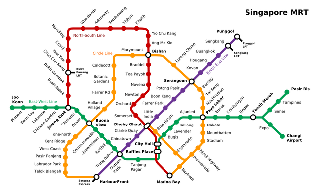
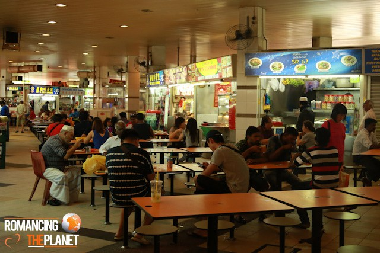

Singapore...one of the most lively and vibrant cities in Asia, is expensive compared to standards of other Asian cities. But the attractions, food, entertainment value, shopping opportunities and the nightlife scene, makes it a destination that attracts everyone.
This post is for people who want to travel Singapore on shoestring and cannot afford the luxuries of Singapore.
1. TRAVEL USING LOW COST AIRLINES
Singapore airport is the best airport in the world and no wonder you would realize it once you step into the Changi International Airport. Flying to Singapore can be an expensive affair. But on a good note there are lot of budget airlines (known as Low Cost Carries [LCC]) connecting Singapore to other parts of Asia and Oceania.
Jet Star, Tiger Air, Air Asia, Lion Air, Cebu Pacific, Fire Fly and Scoot are the LCC that connects Changi Airport to ASEAN countries, few destinations in China, South India, Bangladesh and Australia.
2. USE MRT, LRT AND PUBLIC BUSES
The cheapest and the easiest way to travel in Singapore is using its extensive MRT network. Tickets can be purchased at the station. Alternatively, buy a prepaid EZ Link Card (available at MRT stations and selected 7-Eleven), to avoid buying ticket for every journey. This card can be used on MRT, LRT, public buses and Sentosa Express. This card can be recharged at MRT stations or selected 7-Eleven. If you no longer need the EZ Link Card, but there is some balance left in it, you get the refund of the remaining value. The cost of journey is cheaper if you use a EZ Link Card, then if you travel with a single journey ticket. For places that cannot be reached by MRT, get down at the nearest MRT station and catch a feeder bus to the final destination.
3. STAY IN A HOSTEL
The real estate market in Singapore is one of the most expensive in the world. Obviously, the rates of accommodations in hotels and guest houses are very high. The cheapest single room could cost you USD 50 a night. A better alternative is to stay at the hostels. The hostels in Singapore are ultra clean and very safe. A hostel bed along with a breakfast can cost you USD 20 – 25 a night. Our favorite hostels in Singapore are Fisher BnB and Hostel Lah in Lavender; Five Stones Hostel in Clarke Quay; iStay.inn in Chinatown and Bunc@Radius in Little India. I advise you to book hostels on the web, as the walk-in rates are usually higher.
4. EAT THE STREET
Hawker centres (open air food courts) are where most of the Singaporeans eat their meals. They are cheap and clean. These hawker centres offers a lot of dining options which includes food from Singapore, Malaysian, Indian, Arabic and Chinese cuisines. They usually run until late nights. An average meal would cost around SGD 4-6 and throw away a dollar and you can buy a freshly flavored juice. Our favorite hawker center are at Maxwell Road, Smith Street, Tekka Centre in Little India and Jalan Bukit Merah.
As a backpacker, if you know any other ways to hack Singapore, feel free to share it in the comment section below.